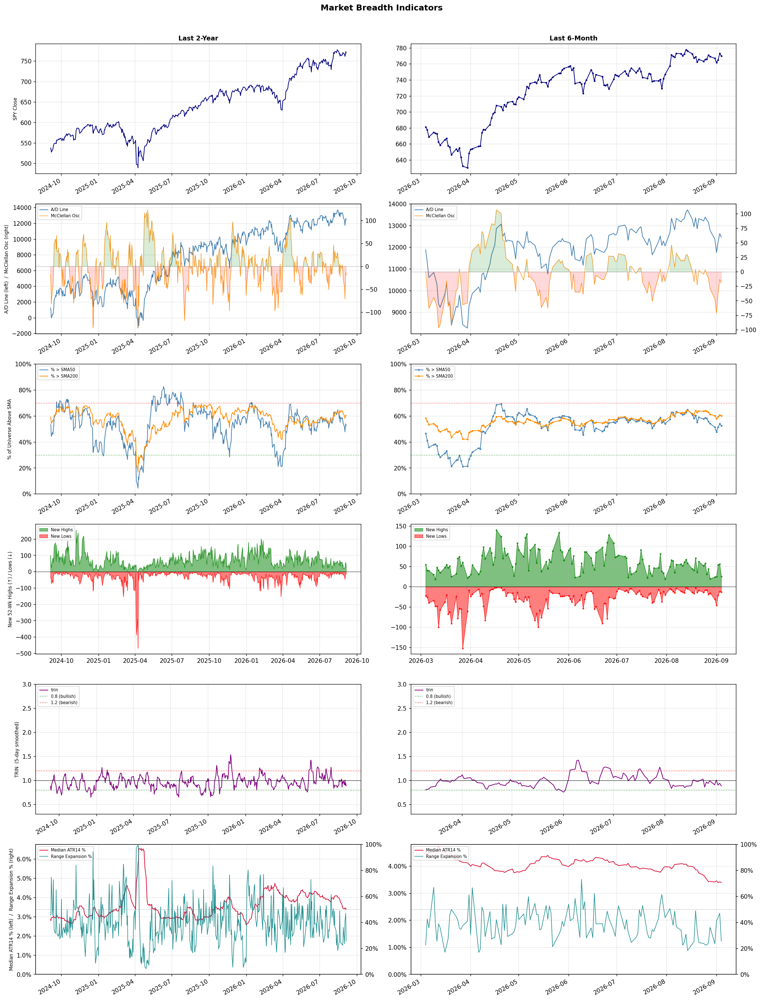

A daily market breadth and sector rotation report for active investors
| Item | Read |
|---|---|
| Regime | Selective Risk-On |
| Risk posture | Selective |
| Universe | 1,330 stocks tracked · 25 new 52-week highs · 30 active swing setups |
| Breadth | 52.5% of tracked stocks are above SMA50 — neutral range, new highs exceed new lows (25 vs 13), McClellan oscillator (breadth momentum) is negative at -19.3 |
| Leadership | Oil & Gas Refining & Marketing, Diagnostics & Research, and Gold |
| Weakest groups | Footwear & Accessories, Solar, and Aerospace & Defense |
Use this report to prioritize research and chart review; validate entries, stops, liquidity, earnings, and risk before acting.
| Item | Read |
|---|---|
| Primary read | Selective Risk-On regime with Selective risk posture. |
| Research queue | UGP, DINO, MPC, VLO, PSX |
| Leadership focus | Oil & Gas Refining & Marketing, Diagnostics & Research, and Gold |
| Caution list | Footwear & Accessories, Solar, and Aerospace & Defense |
| Review prompt | Check extension risk, chart location, fundamentals, valuation, and earnings before using any research row. |
| Item | Read |
|---|---|
| Primary read | 1 active risk warnings; use screen output as watchlist input only. |
| Bullish screens | UGP, MT, NMR, DHT, NAT |
| Bearish screens | FLO, MCD, ADTN |
| Alerts / levels | Automated trigger, stop, ATR, liquidity, reward/risk, and event-risk levels are pending future enrichment. |
| Review prompt | Open the linked chart, define trigger and invalidation, then check liquidity and event risk independently. |
Risk Posture: Selective — screen backdrop supports selective research in leading industries
Metric context: McClellan below -50 = elevated selling pressure; below -100 = washout territory. Range Expansion = share of stocks with daily range above their 20-day average. Signal Density = share of tracked names appearing in signal screens.
| Breadth Date | % > SMA50 | % > SMA200 | New Highs | New Lows | McClellan | Median Range | Avg Range | Median ATR14 | Range Expansion | Signal Density |
|---|---|---|---|---|---|---|---|---|---|---|
| 2026-09-04 | 52.5% | 60.3% | 25 | 13 | -19.3 | 2.5% | 2.9% | 3.4% | 25.6% | 2.4% |

Prior comparison date: September 3, 2026
| Metric | Prior | Current | Change |
|---|---|---|---|
| Regime | Selective Risk-On | Selective Risk-On | unchanged |
| Risk Posture | Selective | Selective | unchanged |
| % > SMA50 | 54.2% | 52.5% | -1.7 pts |
| % > SMA200 | 60.8% | 60.3% | -0.5 pts |
| New Highs | 56 | 25 | -31 |
| New Lows | 12 | 13 | -1 |
Top-10 industries entering: Capital Markets, Oil & Gas Midstream, and Steel. Top-10 industries leaving: Banks - Diversified, Financial Data & Stock Exchanges, and Software - Application. New multi-signal long setups: ANF, DELL, EXPE, ING, MRP, NMR, VOD. New multi-signal short setups: ADTN, FLO, MCD.
| Status | Tickers | Read |
|---|---|---|
| Added | ADTN, ANF, AU, AVTX, CRSR, DELL, EGO, EWTX | New technical screen matches vs prior report. |
| Removed | AEM, AMGN, APPS, AS, BBVA, BNS, DB, DINO | No longer present in today's technical screen matches. |
| Still Active | BNY, DHT, DXYZ, MT, NAT, RPRX, STT, TGB | Appeared in both current and prior reports. |
| Promoted | MT | Model Screen Score improved by at least 15 points. |
| Downgraded | none | Model Screen Score declined by at least 15 points. |
| Direction | Industry | ETF | Prior Rank | Current Rank | Days | Rank Change |
|---|---|---|---|---|---|---|
| Rose | Gold | GDX | 84 | 3 | 35 | +81 |
| Rose | Agricultural Inputs | N/A | 79 | 5 | 28 | +74 |
| Rose | Uranium | URA | 88 | 21 | 42 | +67 |
| Rose | Steel | SLX | 71 | 6 | 14 | +65 |
| Rose | Capital Markets | KCE | 70 | 9 | 28 | +61 |
Bull: The rising relative strength of gold, as reflected in the performance of gold ETFs like GDX, can be attributed to increasing investor interest in gold as a safe-haven asset amid economic uncertainty and inflation concerns. Recent headlines highlight strategies for trading gold stocks without excessive risk, suggesting a growing confidence in gold's stability and potential for returns, particularly as investors seek to diversify their portfolios in volatile markets. Additionally, discussions around the best ways to incorporate gold into retirement accounts indicate a shift towards long-term investment in gold assets, further supporting the bullish sentiment in the sector.
Bear: While the rising relative strength of gold and gold ETFs like GDX may suggest increased investor interest, this trend could be more reflective of short-term market dynamics rather than a sustainable long-term shift. Economic uncertainty and inflation concerns often drive temporary spikes in gold prices, but these conditions can also lead to a flight to riskier assets as investors seek higher returns when confidence returns to the market. Additionally, the growing focus on gold in retirement accounts may not indicate a robust long-term investment thesis but rather a reaction to current market volatility, which could dissipate as economic conditions stabilize.
Verdict: The recent rise in gold's relative strength is primarily driven by heightened investor demand for safe-haven assets amid ongoing economic uncertainty and inflation concerns, as evidenced by increased interest in gold ETFs like GDX. However, a key risk to this bullish trend is the potential for a market rebound that could shift investor focus back to riskier assets, undermining gold's appeal as a long-term investment. Investors should consider maintaining a balanced approach, incorporating gold for diversification while remaining vigilant to changes in broader market sentiment.
Sources: Yahoo Finance
Bull: The Agricultural Inputs sector is experiencing rising relative strength primarily due to increasing investor confidence in the agricultural market, as highlighted by recent bullish sentiments from sources like The Motley Fool and Seeking Alpha, which emphasize the sector's breakout potential. Additionally, the surge in Corteva's stock, coupled with Morningstar's assessment of significant undervaluation across the basic materials sector, suggests a robust demand for agricultural inputs driven by favorable economic conditions and heightened agricultural productivity expectations. This momentum is further reinforced by the stability of companies like KWS Saat, indicating a resilient backdrop for agricultural investments.
Bear: While the recent headlines may suggest a bullish outlook for the Agricultural Inputs sector, several underlying challenges could undermine this optimism. Rising input costs, particularly for fertilizers and energy, could squeeze margins for agricultural producers, leading to reduced demand for inputs. Additionally, potential economic headwinds such as inflationary pressures and geopolitical tensions could disrupt supply chains and dampen investor sentiment, countering the current momentum highlighted by bullish analysts.
Verdict: The Agricultural Inputs sector is likely experiencing a rise in relative strength due to increasing investor confidence fueled by strong demand forecasts and positive market sentiment, as evidenced by bullish reports from financial analysts. However, key risks remain, particularly from rising input costs and potential economic headwinds that could pressure margins and disrupt supply chains, which investors should closely monitor to assess future performance.
Sources: Google News
Bull: The rising relative strength of uranium, as evidenced by the recent headlines, is primarily driven by a renewed investor appetite for nuclear energy amid broader market volatility. The rebound in nuclear stocks, highlighted by significant gains in companies like Uranium Energy and the positive sentiment surrounding NuScale Power, suggests a growing recognition of nuclear power's role in achieving energy security and sustainability, especially as traditional energy sectors like oil face fluctuations. Additionally, the mention of uranium plays surging as the nuclear power trade diverges from the wider sector indicates a specific bullish sentiment towards uranium, likely fueled by increasing demand for clean energy solutions in the face of climate change and energy transition initiatives.
Bear: While the rising relative strength of uranium stocks may suggest a positive outlook, it's essential to recognize that the recent gains could be driven more by short-term market sentiment and speculative trading rather than sustainable demand fundamentals. The volatility in related sectors, such as oil, and the mixed performance of key players like NuScale Power and Oklo indicate that the nuclear energy narrative is still fraught with uncertainty, particularly as regulatory challenges and public perception issues surrounding nuclear energy persist. Moreover, the broader market's focus on clean energy solutions may not translate into long-term commitment to uranium investments, especially as alternative renewable technologies continue to gain traction and investment.
Verdict: The recent rise in uranium stocks is fundamentally driven by a renewed investor interest in nuclear energy as a stable and clean energy source amidst market volatility and the urgent need for energy security and sustainability. However, a key risk lies in the potential for this momentum to be short-lived, as ongoing regulatory challenges and the growing competitiveness of alternative renewable technologies could undermine long-term commitment to uranium investments. Investors should closely monitor regulatory developments and the performance of alternative energy sources to gauge the sustainability of this bullish trend.
Sources: Yahoo Finance, Google News
Bull: The rising relative strength of the steel industry, as evidenced by the Steel ETF (SLX) hitting new 52-week highs, is primarily driven by robust demand from sectors such as construction and manufacturing, which are being further bolstered by advancements in technology, including AI. The headlines indicate a growing interest in steel stocks like Nucor and Steel Dynamics, reflecting investor confidence in their performance amid increasing consumption driven by infrastructure projects and industrial applications, which are likely to continue fueling growth in the sector.
Bear: While the rising relative strength of the steel industry and the new highs for the SLX ETF may seem promising, this trend could be misleading due to potential overvaluation driven by speculative enthusiasm rather than sustainable demand. Furthermore, the steel sector faces significant headwinds, including rising raw material costs, potential trade tensions, and environmental regulations that could stifle profitability. Additionally, if the anticipated growth in construction and manufacturing falters or if AI advancements do not translate into substantial demand increases, the current bullish sentiment may quickly reverse, exposing the sector to sharp corrections.
Verdict: The steel industry's recent strength, reflected in the SLX ETF reaching new 52-week highs, is fundamentally driven by robust demand from construction and manufacturing sectors, supported by technological advancements and significant infrastructure investments. However, investors should remain cautious of potential overvaluation and key risks such as rising raw material costs, trade tensions, and environmental regulations, which could undermine profitability and lead to a swift market correction if demand growth falters.
Sources: Yahoo Finance
Bull: The rising relative strength of the Capital Markets sector, as evidenced by the positive sentiment surrounding the SPDR S&P Capital Markets ETF (KCE), can be attributed to increasing investor confidence in financial market stability and growth prospects. Recent headlines suggest a bullish outlook for major players like Interactive Brokers, indicating strong performance compared to peers, which reflects a broader trend of improving market conditions and investor appetite for capital market services. Additionally, the overall optimism in Wall Street, as highlighted in the Nasdaq stock outlook, further supports the favorable environment for capital market firms, driving interest and investment in the sector.
Bear: While the rising relative strength of the Capital Markets sector may suggest positive sentiment, it is crucial to consider that this could be a temporary reaction to short-term market fluctuations rather than a sustainable trend. Increasing interest rates, potential regulatory changes, and geopolitical uncertainties could dampen investor confidence and negatively impact the performance of capital market firms like Interactive Brokers. Additionally, the overall optimism in Wall Street may not reflect the underlying economic realities, which could lead to a disconnect between market sentiment and actual financial performance.
Verdict: The Capital Markets sector is experiencing a rise in relative strength due to improving investor confidence, driven by positive performance indicators from major players like Interactive Brokers and overall bullish sentiment on Wall Street. However, key risks such as rising interest rates, potential regulatory changes, and geopolitical uncertainties could undermine this momentum, suggesting that investors should remain cautious and closely monitor these factors before making significant commitments in the sector.
Sources: Yahoo Finance
| Direction | Industry | ETF | Prior Rank | Current Rank | Days | Rank Change |
|---|---|---|---|---|---|---|
| Fell | REIT - Retail | N/A | 10 | 76 | 42 | -66 |
| Fell | Leisure | N/A | 9 | 69 | 35 | -60 |
| Fell | Travel Services | N/A | 6 | 66 | 28 | -60 |
| Fell | Apparel Manufacturing | N/A | 19 | 77 | 28 | -58 |
| Fell | Industrial Distribution | N/A | 14 | 70 | 28 | -56 |
Bear: While the focus on income stability in the retail REIT sector may suggest a defensive posture, it actually highlights a fundamental weakness in the underlying business model, as these REITs struggle to adapt to changing consumer behaviors and the rise of e-commerce. Additionally, the emphasis on long-term investment strategies for 2026 indicates a lack of immediate growth prospects, raising concerns about the sustainability of dividends and overall returns in a potentially declining retail environment. The falling relative-strength trend further underscores the risk that retail REITs may continue to underperform as economic pressures mount.
Bull: The relative weakness in the REIT - Retail sector can be attributed to broader market concerns regarding consumer spending and economic uncertainty, as highlighted by the focus on income stability in recent headlines such as the one about CPNREIT. Additionally, the emphasis on investment strategies for 2026, as seen in articles from Morningstar and U.S. News Money, suggests that investors may be cautious about short-term volatility and are seeking safer, more stable options, which could detract from the attractiveness of retail-focused REITs.
Verdict: The retail REIT sector is experiencing a decline primarily due to heightened concerns about consumer spending and economic uncertainty, which have led investors to prioritize income stability over growth potential. However, the bear case highlights a critical risk: the inability of retail REITs to adapt to shifting consumer behaviors and the increasing dominance of e-commerce, raising questions about the sustainability of dividends and long-term returns. Investors should remain cautious and consider reallocating to more resilient sectors or REITs with stronger growth prospects.
Sources: Google News
Bear: While the bull analyst attributes the decline in the leisure sector's relative strength to broader economic uncertainties, it is crucial to recognize that the sector has been facing structural challenges that extend beyond macroeconomic factors. Rising operational costs, labor shortages, and shifts in consumer preferences towards more value-driven experiences are eroding profit margins and limiting growth potential. Furthermore, as geopolitical tensions persist and inflation remains high, discretionary spending is likely to be further constrained, leading to a more pronounced downturn in leisure-related activities than currently anticipated.
Bull: The Leisure sector is likely experiencing a decline in relative strength due to broader economic uncertainties, as indicated by the flat performance of European stocks amid geopolitical tensions and the anticipation of key economic data. This environment can dampen consumer spending on discretionary activities, including travel and leisure, which is reflected in the cautious tone of reports like the Q1 recap from StockStory and the mixed outlook from Zacks. Additionally, while some analysts are bullish on specific stocks within the sector, the overall sentiment may be tempered by macroeconomic factors that influence consumer confidence and spending habits.
Verdict: The leisure sector's decline is primarily driven by a combination of broader economic uncertainties and structural challenges, such as rising operational costs and changing consumer preferences, which are dampening discretionary spending. The key risk highlighted by the bear thesis is the potential for prolonged inflation and geopolitical tensions to further constrain consumer confidence and spending, leading to a deeper downturn in leisure activities than currently projected. Investors should closely monitor economic indicators and consumer sentiment to gauge the sector's recovery potential.
Sources: Google News
Bear: While the bull analyst highlights macroeconomic pressures and evolving consumer preferences, it’s crucial to recognize that the travel services industry is facing significant headwinds that could undermine its recovery. Rising inflation and economic uncertainty not only dampen consumer discretionary spending but also lead to increased operational costs for travel providers, which could squeeze margins and result in higher prices for consumers. Furthermore, the reliance on AI technology, while promising, may not yield immediate benefits and could exacerbate market volatility as companies struggle to integrate these advancements while maintaining service quality, ultimately deterring cautious consumers from committing to travel expenditures.
Bull: The Travel Services industry is experiencing a decline in relative strength primarily due to macroeconomic pressures and evolving consumer preferences highlighted in recent headlines. The ongoing shifts in consumer discretionary spending, as noted in the Q2 highlights, may indicate a cautious approach to travel expenditures as inflation and economic uncertainty persist. Additionally, while advancements in AI are transforming the travel industry, the immediate impact may lead to market volatility as companies adapt to new technologies, potentially overshadowing the positive long-term outlook for travel and vacation providers.
Verdict: The Travel Services industry is likely experiencing a decline due to persistent macroeconomic pressures, including rising inflation and economic uncertainty, which are dampening consumer discretionary spending and increasing operational costs for providers. The key risk from the bear case is that these factors may not only squeeze profit margins but also lead to higher prices for consumers, further deterring travel expenditures and hindering recovery in the sector. Investors should closely monitor consumer sentiment and operational adaptability to AI advancements as indicators of potential recovery or further decline.
Sources: Google News
Bear: While the bull analyst highlights external pressures such as geopolitical tensions and tariffs, these factors may not fully account for the fundamental issues within the Apparel Manufacturing sector, including overcapacity, rising production costs, and shifting consumer preferences towards sustainability and ethical sourcing. Additionally, the recent headlines suggest a disconnect between optimistic forecasts for specific stocks and the broader industry trend of declining relative strength, indicating that the market may be mispricing the risks associated with these companies. Therefore, the underlying challenges facing the sector could lead to further underperformance, making a bearish outlook more warranted.
Bull: The Apparel Manufacturing sector is likely experiencing a decline in relative strength due to external pressures such as geopolitical tensions and tariff concerns, particularly highlighted by the threat to India's $100 billion garment export goal amid the Iran war and tariffs, as reported by CNBC. Additionally, the overall consumer discretionary spending environment may be under pressure, which is reflected in the cautious outlook from Zacks and The Motley Fool regarding the sector's performance in the near term. These factors contribute to a challenging landscape for apparel manufacturers, impacting their competitiveness relative to other industries.
Verdict: The Apparel Manufacturing sector's decline is primarily driven by fundamental issues such as overcapacity and rising production costs, compounded by shifting consumer preferences towards sustainability and ethical sourcing. The bear case highlights a critical risk: the potential mispricing of stocks within the sector, as optimistic forecasts may overlook these underlying challenges, suggesting that investors should proceed with caution and consider reallocating resources to more resilient industries.
Sources: Google News
Bear: While the bull analyst highlights potential long-term fundamentals, the immediate challenges facing the Industrial Distribution sector are significant and cannot be overlooked. Rising interest rates are not only increasing borrowing costs but also dampening capital expenditures, while persistent supply chain disruptions continue to hinder operational efficiency and inventory management. Furthermore, the slowdown in manufacturing output and construction spending suggests that demand for distribution services may remain weak for an extended period, raising concerns about the sector's ability to recover in the near term.
Bull: The Industrial Distribution sector is likely experiencing a decline in relative strength due to broader macroeconomic concerns, such as rising interest rates and supply chain disruptions, which have affected overall industrial activity and investment. Additionally, the recent slowdown in manufacturing output and construction spending may have led to reduced demand for distribution services, causing investors to reassess the growth prospects of companies within this sector. Despite these challenges, the long-term fundamentals remain strong, as infrastructure spending and a shift towards automation and efficiency in industrial operations could drive recovery and growth in the future.
Verdict: The Industrial Distribution sector is currently facing a decline primarily due to rising interest rates and ongoing supply chain disruptions, which have negatively impacted manufacturing output and construction spending, leading to reduced demand for distribution services. The key risk from the bear case is that these macroeconomic challenges could persist, hindering recovery and limiting growth prospects in the near term. Investors should closely monitor interest rate trends and supply chain developments to assess potential recovery signals before making significant commitments in this sector.
Sources: Google News
| Industry | Rank | ETF | 7d | 14d | 28d | 42d | Chg 42d | Size | 20D | 60D | Composite | Active Setups |
|---|---|---|---|---|---|---|---|---|---|---|---|---|
| Oil & Gas Refining & Marketing | 1 | CRAK | 8 | 3 | 5 | 1 | 0 | 7 | 22.2% | 46.2% | 0.990 | 0 |
| Diagnostics & Research | 2 | N/A | 1 | 1 | 1 | 14 | +12 | 16 | 7.1% | 37.9% | 0.923 | 0 |
| Gold | 3 | GDX | 5 | 6 | 33 | 79 | +76 | 25 | 10.1% | 34.0% | 0.886 | 1 |
| Health Information Services | 4 | N/A | 2 | 2 | 2 | 11 | +7 | 12 | 10.3% | 42.8% | 0.883 | 0 |
| Agricultural Inputs | 5 | N/A | 23 | 36 | 79 | 37 | +32 | 5 | 18.0% | 23.1% | 0.873 | 0 |
| Steel | 6 | SLX | 41 | 71 | 21 | 18 | +12 | 5 | 7.6% | 8.7% | 0.870 | 0 |
| Oil & Gas Integrated | 7 | XLE | 33 | 14 | 30 | 8 | +1 | 10 | 9.1% | 8.4% | 0.857 | 0 |
| Oil & Gas E&P | 8 | XOP | 17 | 9 | 53 | 29 | +21 | 26 | 12.9% | 8.0% | 0.855 | 1 |
| Capital Markets | 9 | KCE | 24 | 27 | 70 | 59 | +50 | 31 | 13.9% | 12.3% | 0.836 | 1 |
| Oil & Gas Midstream | 10 | AMLP | 19 | 33 | 58 | 12 | +2 | 22 | 7.8% | 11.1% | 0.835 | 0 |
Rank columns (7d–42d) show the industry's rank that many trading days ago — lower is stronger. Chg 42d = rank change vs 42 trading days ago — positive means the industry moved up. 20D and 60D are the mean stock return within the industry over that period. Active Setups: count of today's swing-trade candidates from this industry appearing across all signal screens.
| Industry | Rank | ETF | 7d | 14d | 28d | 42d | Chg 42d | Size | 20D | 60D | Composite | Active Setups |
|---|---|---|---|---|---|---|---|---|---|---|---|---|
| Footwear & Accessories | 88 | N/A | 87 | 87 | 72 | 49 | -39 | 5 | -14.0% | -17.4% | 0.033 | 0 |
| Solar | 87 | TAN | 88 | 86 | 86 | 85 | -2 | 8 | -13.6% | -25.3% | 0.048 | 0 |
| Aerospace & Defense | 86 | ITA | 68 | 49 | 42 | 84 | -2 | 26 | -15.3% | -15.1% | 0.123 | 1 |
| Resorts & Casinos | 85 | N/A | 84 | 68 | 55 | 51 | -34 | 6 | -7.2% | -10.7% | 0.142 | 0 |
| Electrical Equipment & Parts | 84 | XLI | 79 | 75 | 83 | 81 | -3 | 12 | -10.8% | -23.1% | 0.144 | 1 |
| Utilities - Renewable | 83 | N/A | 85 | 81 | 85 | 86 | +3 | 6 | -7.9% | -20.9% | 0.164 | 0 |
| Chemicals | 82 | N/A | 86 | 85 | 88 | 77 | -5 | 8 | -6.2% | -23.6% | 0.174 | 0 |
| Electronic Components | 81 | XLK | 61 | 57 | 56 | 68 | -13 | 10 | -12.7% | -15.3% | 0.195 | 0 |
| Semiconductor Equipment & Materials | 80 | SOXX | 75 | 55 | 50 | 67 | -13 | 17 | -12.1% | -8.9% | 0.206 | 0 |
| Building Products & Equipment | 79 | XHB | 72 | 79 | 47 | 52 | -27 | 8 | -8.3% | -0.5% | 0.208 | 0 |
Rank columns (7d–42d) show the industry's rank that many trading days ago — lower is stronger. Chg 42d = rank change vs 42 trading days ago — positive means the industry moved up. 20D and 60D are the mean stock return within the industry over that period. Active Setups: count of today's swing-trade candidates from this industry appearing across all signal screens.
These are research candidates from top-ranked stocks, capped at five names per industry to avoid over-concentration. Returns shown (60D, 120D, 250D) are historical — they reflect where prices have already moved, not forward expectations. Extension Risk flags names that may require extra patience or a better entry point. They are not buy signals.
Chart: TV = TradingView chart (opens in browser); PDF = local chart file (if downloaded).
| Ticker | Name | Industry | Industry Rank | Market Cap | 60D Hist | 120D Hist | 250D Hist | Extension Risk | Research Reason | Chart |
|---|---|---|---|---|---|---|---|---|---|---|
| UGP | Ultrapar Participacoes | Oil & Gas Refining & Marketing | 1 | N/A | 54.6% | 51.7% | 95.7% | Extended | Top-ranked in industry; extended | TV |
| DINO | HF Sinclair | Oil & Gas Refining & Marketing | 1 | N/A | 49.9% | 88.7% | 113.1% | Constructive | Top-ranked in industry | TV |
| MPC | Marathon Petroleum | Oil & Gas Refining & Marketing | 1 | N/A | 48.1% | 71.0% | 118.2% | Constructive | Top-ranked in industry | TV |
| VLO | Valero Energy | Oil & Gas Refining & Marketing | 1 | N/A | 44.3% | 60.8% | 140.6% | Constructive | Top-ranked in industry | TV |
| PSX | Phillips 66 | Oil & Gas Refining & Marketing | 1 | N/A | 41.1% | 48.9% | 101.7% | Constructive | Top-ranked in industry | TV |
| PSNL | Personalis | Diagnostics & Research | 2 | N/A | 79.0% | 153.3% | 223.3% | Extended | Top-ranked in industry; extended | TV |
| IQV | IQVIA Holdings | Diagnostics & Research | 2 | N/A | 47.0% | 62.4% | 42.7% | Constructive | Top-ranked in industry | TV |
| ILMN | Illumina | Diagnostics & Research | 2 | N/A | 34.3% | 82.9% | 122.3% | Constructive | Top-ranked in industry | TV |
| RVTY | Revvity | Diagnostics & Research | 2 | N/A | 28.6% | 50.8% | 51.3% | Constructive | Top-ranked in industry | TV |
| OPK | Opko Health | Diagnostics & Research | 2 | N/A | 13.9% | 37.8% | 15.5% | Constructive | Top-ranked in industry | TV |
| FSM | Fortuna Silver Mines | Gold | 3 | N/A | 52.2% | 19.5% | 57.0% | Extended | Top-ranked in industry; extended | TV |
| SSRM | SSR Mining | Gold | 3 | N/A | 51.4% | 30.9% | 73.8% | Extended | Top-ranked in industry; extended | TV |
| WPM | Wheaton Precious Metals | Gold | 3 | N/A | 44.3% | 11.8% | 46.8% | Constructive | Top-ranked in industry | TV |
| GFI | Gold Fields | Gold | 3 | N/A | 41.4% | 0.1% | 37.0% | Constructive | Top-ranked in industry | TV |
| CDE | Coeur Mining | Gold | 3 | N/A | 37.8% | 1.5% | 46.0% | Constructive | Top-ranked in industry | TV |
| TXG | 10x Genomics | Health Information Services | 4 | N/A | 115.2% | 275.4% | 349.7% | Very extended | Top-ranked in industry; very extended | TV |
| VEEV | Veeva Systems | Health Information Services | 4 | N/A | 68.0% | 48.5% | -2.7% | Extended | Top-ranked in industry; extended | TV |
| HTFL | Heartflow | Health Information Services | 4 | N/A | 66.2% | 133.1% | 41.8% | Extended | Top-ranked in industry; extended | TV |
| SDGR | Schrodinger | Health Information Services | 4 | N/A | 42.0% | 58.2% | 3.3% | Constructive | Top-ranked in industry | TV |
| TEM | Tempus AI | Health Information Services | 4 | N/A | 30.6% | 27.0% | -19.4% | Constructive | Top-ranked in industry | TV |
These are technical screen matches from existing signal files. They are not trade recommendations. Trigger, stop, ATR, liquidity, reward/risk, and event risk still require separate validation until those inputs are available.
Model Screen Score is weighted by signal count, industry rank, freshness, and setup type. It is not a probability of profit, expected return, or suitability rating. Industry cap: max 3 candidates per industry.
Signal glossary: Momentum Pullback = stock in an uptrend that has pulled back 10–30% and shows re-entry conditions. MA Compression = short- and long-term moving averages converging, often preceding a directional move. Three-Day Up/Down = three consecutive closes in the same direction. New 52Wk High/Low = price reached a new annual extreme.
Chart: TV = TradingView chart (opens in browser); PDF = local chart file (if downloaded).
| Ticker | Industry | Setups | Close | Industry Rank | Signal Count | Model Screen Score | Reason | Chart |
|---|---|---|---|---|---|---|---|---|
| UGP | Oil & Gas Refining & Marketing | New 52Wk High; Three-Day Up | 7.28 | 1 | 2 | 100 | Multi-signal; top industry breakout | TV |
| MT | Steel | New 52Wk High; Three-Day Up | 78.74 | 6 | 2 | 93 | Multi-signal; top industry breakout | TV |
| NMR | Capital Markets | New 52Wk High; Three-Day Up | 10.65 | 9 | 2 | 85 | Multi-signal; top industry breakout | TV |
| DHT | Oil & Gas Midstream | New 52Wk High; Three-Day Up | 20.87 | 10 | 2 | 85 | Multi-signal; top industry breakout | TV |
| NAT | Oil & Gas Midstream | New 52Wk High; Three-Day Up | 7.25 | 10 | 2 | 85 | Multi-signal; top industry breakout | TV |
| BNY | Banks - Diversified | New 52Wk High; Three-Day Up | 164.84 | 11 | 2 | 85 | Multi-signal; new-high strength | TV |
| ING | Banks - Diversified | New 52Wk High; Three-Day Up | 37.18 | 11 | 2 | 85 | Multi-signal; new-high strength | TV |
| STT | Asset Management | New 52Wk High; Three-Day Up | 194.26 | 13 | 2 | 85 | Multi-signal; new-high strength | TV |
| RPRX | Biotechnology | New 52Wk High; Three-Day Up | 63.96 | 14 | 2 | 85 | Multi-signal; new-high strength | TV |
| DELL | Computer Hardware | New 52Wk High; Three-Day Up | 524.14 | 23 | 2 | 77 | Multi-signal; new-high strength | TV |
| VOD | Telecom Services | New 52Wk High; Three-Day Up | 16.90 | 34 | 2 | 70 | Multi-signal; new-high strength | TV |
| ANF | Apparel Retail | New 52Wk High; Three-Day Up | 149.67 | 38 | 2 | 70 | Multi-signal; new-high strength | TV |
| MRP | REIT - Residential | New 52Wk High; Three-Day Up | 32.02 | 56 | 2 | 65 | Multi-signal; new-high strength | TV |
| TNDM | Medical Devices | Momentum Pullback | 19.90 | 25 | 2 | 62 | Multi-signal; pullback setup | TV |
| EXPE | Travel Services | Momentum Pullback | 298.04 | 66 | 2 | 40 | Multi-signal; pullback setup | TV |
| AU | Gold | Momentum Pullback | 109.07 | 3 | 1 | 65 | Single-signal; top industry pullback | TV |
| EGO | Gold | Momentum Pullback | 43.02 | 3 | 1 | 65 | Single-signal; top industry pullback | TV |
| WTI | Oil & Gas E&P | Momentum Pullback | 3.82 | 8 | 1 | 50 | Single-signal; top industry pullback | TV |
| RIOT | Capital Markets | Momentum Pullback | 21.80 | 9 | 1 | 50 | Single-signal; top industry pullback | TV |
| DXYZ | Asset Management | Momentum Pullback | 32.70 | 13 | 1 | 50 | Single-signal; pullback setup | TV |
| AVTX | Biotechnology | Momentum Pullback | 19.23 | 14 | 1 | 50 | Single-signal; pullback setup | TV |
| EWTX | Biotechnology | Momentum Pullback | 43.07 | 14 | 1 | 50 | Single-signal; pullback setup | TV |
| TGB | Copper | Momentum Pullback | 8.45 | 16 | 1 | 42 | Single-signal; pullback setup | TV |
| PATH | Software - Infrastructure | Momentum Pullback | 15.19 | 20 | 1 | 42 | Single-signal; pullback setup | TV |
| RBRK | Software - Infrastructure | Momentum Pullback | 93.67 | 20 | 1 | 42 | Single-signal; pullback setup | TV |
| CRSR | Computer Hardware | Momentum Pullback | 12.72 | 23 | 1 | 42 | Single-signal; pullback setup | TV |
| P | Computer Hardware | Momentum Pullback | 99.51 | 23 | 1 | 42 | Single-signal; pullback setup | TV |
Bearish setups — stocks making new lows or showing persistent downside patterns. Validate carefully before acting.
| Ticker | Industry | Setups | Close | Industry Rank | Signal Count | Model Screen Score | Reason | Chart |
|---|---|---|---|---|---|---|---|---|
| FLO | Packaged Foods | New 52Wk Low; Three-Day Down | 6.27 | 41 | 2 | 35 | Multi-signal; new-low weakness | TV |
| MCD | Restaurants | New 52Wk Low; Three-Day Down | 255.69 | 48 | 2 | 35 | Multi-signal; new-low weakness | TV |
| ADTN | Communication Equipment | New 52Wk Low; Three-Day Down | 7.10 | 78 | 2 | 25 | Multi-signal; new-low weakness | TV |
How To Use This Report
| Use | Purpose |
|---|---|
| Market map | Start with breadth, regime, risk warnings, and what changed since the prior report. |
| Industry scan | Use leading, deteriorating, rising, and declining industries to focus research. |
| Research queue | Treat long-term candidates as names for deeper fundamental, valuation, and chart review. |
| Technical review | Treat bullish and bearish screen matches as watchlist inputs that require independent trigger, stop, liquidity, and event-risk checks. |
| Source follow-up | Use chart links and source files to verify raw inputs before relying on any row. |
What This Report Is Not
| Not | Meaning |
|---|---|
| Investment advice | The report does not evaluate personal objectives, risk tolerance, tax situation, account type, or suitability. |
| Buy/sell recommendation | Named tickers are research candidates or screen matches, not recommendations to transact. |
| Price target | The report does not provide fair value estimates, targets, or expected returns. |
| Trade plan | Trigger, stop, sizing, reward/risk, liquidity, and event-risk review remain separate user work. |
| Performance claim | Model Screen Score is not validated historical performance or a forecast of future results. |
| Item | Note |
|---|---|
| Version | Daily Report Methodology v1 |
| Model Screen Score | Screen-fit rank based on signal count, industry rank, freshness, and setup type. |
| Not predictive proof | The score is not expected return, probability of profit, historical validation, or suitability analysis. |
| Industry ranks | Composite industry ranks use existing daily ranking outputs and historical rank columns when available. |
| Research candidates | Long-term rows are research candidates from ranked stocks and leading industries, with historical returns labeled as historical only. |
| Technical matches | Bullish and bearish rows are screen matches requiring independent chart, trigger, stop, liquidity, and event-risk review. |
| Source | Status | Rows | Path |
|---|---|---|---|
| Market breadth | present | 1255 | breadth_20260904.csv |
| Industry composite rankings | present | 88 | all_industry_composite_20260904.csv |
| Top ranked stocks | present | 159 | top_ranked_composite_20260904.csv |
| All ranked stocks | present | 1330 | all_stocks_composite_sorted_20260904.csv |
| Top momentum pullbacks | present | 1476 | top_momentum_pullbacks_20260904.csv |
| MA compression | present | 1476 | ma_compression_stocks_20260904.csv |
| Three-day up/down | present | 87 | three_day_up_down_stocks_20260904.csv |
| New 52-week members | present | 38 | breadth_new_52wk_members_20260904.csv |
This report is generated from automated technical screens and is for informational and research purposes only. It is not investment advice, a solicitation, or a recommendation to buy or sell any security. Past performance is not indicative of future results. You are solely responsible for your own investment decisions. Consult a licensed financial advisor before acting on any information herein.